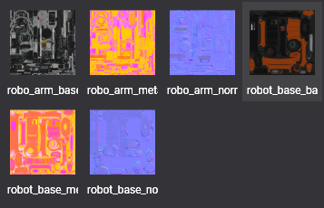
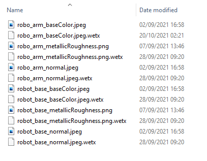
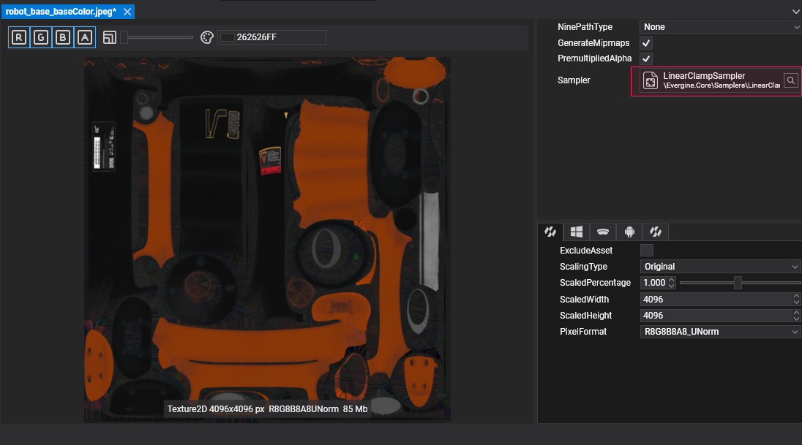

Import a Texture

In Evergine Studio, importing an image file creates a texture asset, as explained in Create Assets. Drag the file into the Assets Details panel or copy it into the project's Content folder.
Textures in Assets Details
Texture assets appear in the Assets Details panel when you select their folder in the Project Explorer.

Texture files in the Content folder
Each imported image gets a metadata file with the .wetx extension next to it, which stores the texture's import settings.

Supported formats
| Extension | Compression | Alpha | Texture types |
|---|---|---|---|
.jpg, .jpeg |
Lossy | No | Texture2D |
.png |
Lossless | Yes | Texture2D |
.webp |
Lossy or lossless | Yes | Texture2D |
.bmp |
None | Rarely | Texture2D |
.tga |
None or RLE | Yes | Texture2D |
.hdr |
RLE, floating point | No | Texture2D |
.dds |
Block compression (BC1 to BC7) or none | Yes | All |
.ktx, .ktx2 |
GPU compressed formats or none | Yes | All |
Tip
Each profile sets the compressed formats its platform prefers (for example BC3 on Windows and ETC on Android), and the Texture Editor lets you override the pixel format per profile.
Sampler
A texture asset references a sampler asset, which says how it is filtered and wrapped by default. Change it in the Texture Editor; materials can still use a different sampler for the same texture.
